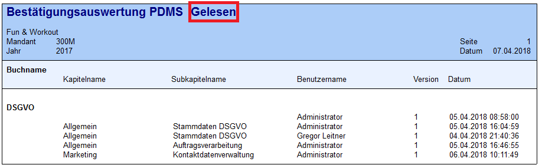
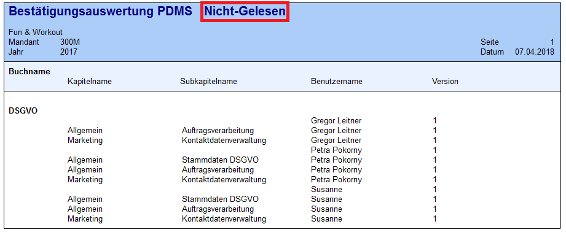
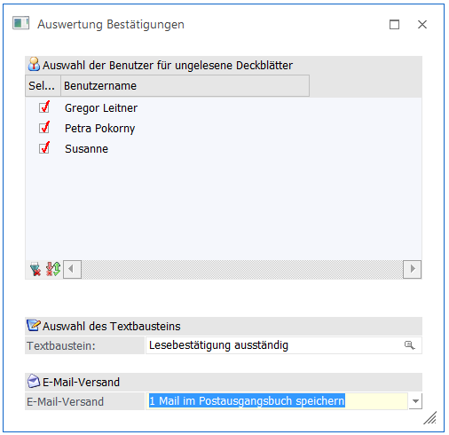

Nachdem alle Einstellungen getroffen wurden, kann die Auswertung erzeugt werden. Es stehen folgende Ausgabemöglichkeiten zur Verfügung:
Ø Ausgabe Bildschirm
Ø Ausgabe Drucker


Hinweis
Wurde ein Benutzer in der Benutzerverwaltung gelöscht, so werden von diesem erteilte Lesebestätigungen auch nicht mehr ausgegeben, da diese Daten bei löschen des Benutzers auch gelöscht werden.
Ø E-Mail Benachrichtigungen
Es kann direkt aus der Auswertung eine E-Mail Benachrichtigung generiert werden, um zum Beispiel Benutzer, die noch keine Lesebestätigung erteilt haben, darauf aufmerksam zu machen, dass diese noch ausständig ist.

Ø Auswahl der Benutzer für ungelesene Deckblätter
Hier werden all jene Benutzer vorgeschlagen, die nach den Einstellungskriterien der Auswertung ausgegeben werden. Mittels Checkbox kann nochmals eine Selektion durchgeführt werden, wer das E-Mail erhalten soll.
Ø Auswahl des Textbausteins
Um das Mail mit mehr Informationen als den direkten Link ins WinLine PDMS zu gestalten, kann ein Textbaustein hinterlegt werden. Textbausteine können unter
1 WinLine START
1 Optionen
1 Textbausteine
1 Textbausteine
angelegt werden.
Ø E-Mail Versand
Es gibt zwei Möglichkeiten, wie der Versand erfolgen soll:
ü 0 Sofort
ü 1 Mail im Postausgangsbuch speichern